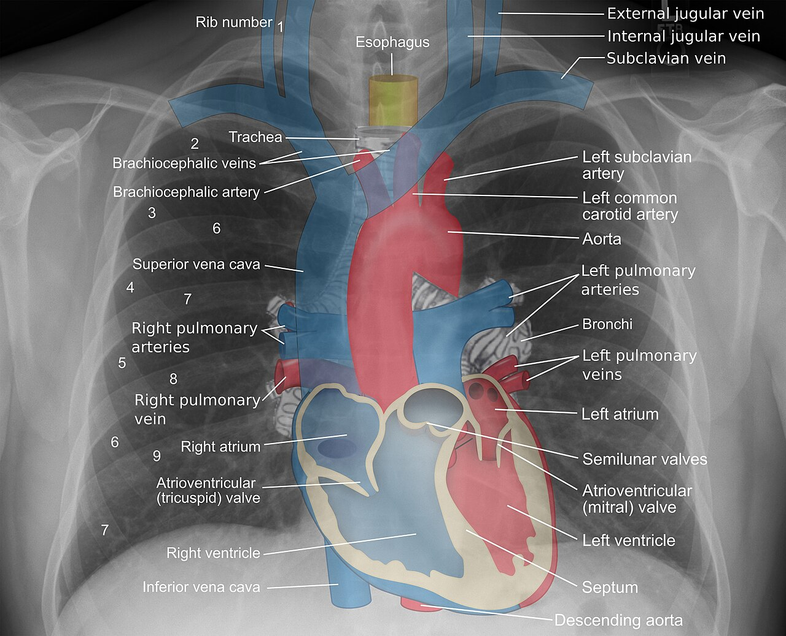

34 cortes axiais. Arraste o controle, role o mouse ou arraste para cima e para baixo sobre a imagem. A janela remapeia o brilho dos pixels.
Estruturas do mediastino rotuladas pelo autor da imagem (Mikael Häggström, M.D.). Clique para ampliar; nenhuma marcação foi acrescentada pelo ENTROLABS.
